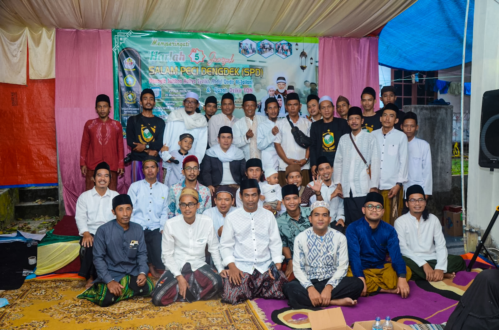

Jam'iyah Salam Peci Dengdek (SPD)
Juli 27, 2024Karena itulah SPD menggabungkan dua Hidmah yang menjadi landasan utama, yaitu Hidmah Ilmiyah dengan terus mengkaji Karya-karya Ulama baik Salaf maupun Kholaf, dari Mutaqoddimin ataupun Muta'akhirin, dari seluruh Fan-fan Ilmu yang ada, seperti Tafsir, Hadits, Tauhid.....
SPD atau Salam Peci Dengdek adalah sebuah Jami'iyah / Perkumpulan orang yang ingin terus belajar menghidupkan dan memperaktekan Nilai-nilai Agama dalam Kehidupan sehari-hari, menebarkan kedamaian tanpa memandang Suku, Ras atau Agama, dan terus menjaga ajaran kesucian jiwa yang telah di wariskan oleh para Nabi melalui para Kekasih Allah.
Karena itulah SPD menggabungkan dua Hidmah yang menjadi landasan utama, yaitu Hidmah Ilmiyah dengan terus mengkaji Karya-karya Ulama baik Salaf maupun Kholaf, dari Mutaqoddimin ataupun Muta'akhirin, dari seluruh Fan-fan Ilmu yang ada, seperti Tafsir, Hadits, Tauhid, Fiqih, Tasawwuf bahkan dengan semua Ilmu-ilmu penunjangnya seperti Nahwu, Shorof, Ma'ani, Bayan, Mantiq, Ushul Fiqih dan lain sebaginya.
Di samping itu juga SPD menerapkan metode Amaliyah yaitu mengambil satu Thariqat yang sudah Masyhur dan di akui Dunia dengan Mursyid yang Kamil Mukammil, yaitu Tharikat Qodiriyyah Wa Naqsabandiyah dari jalur Suryalaya yang bermursyidkan Syeikh Kamil Mukammil Sayyid Ahmad Sohibul Wafa Tajul Arifin dengan bimbingan langsung dari Wakil Talqin beliau yaitu Syeikh Kholil Said di Gunung Sumbul Ciomas.
Maka dengan menggabungkan Ilmiyah dan Amaliyah ini, kami berharap Jami'iyah ini menjadi Perintis dari penataan Hati dan pensucian Jiwa, yang berbuah pada kerja nyata dalam kehidupan sehari-hari dalam membangun Sumber Daya Manusia yang Berkualitas dan Bermartabat, juga bisa bermanfaat bagi Bangsa dan Negara di tengah keterpurukan Ekomomi, Moral dan Sosial.
Semoga jami'iyah Ini Mendapat Ridho Allah dan terus bersinar seperti Mentari Duha yang terangnya menghangatkan Tubuh dan menyehatkan Jiwa.